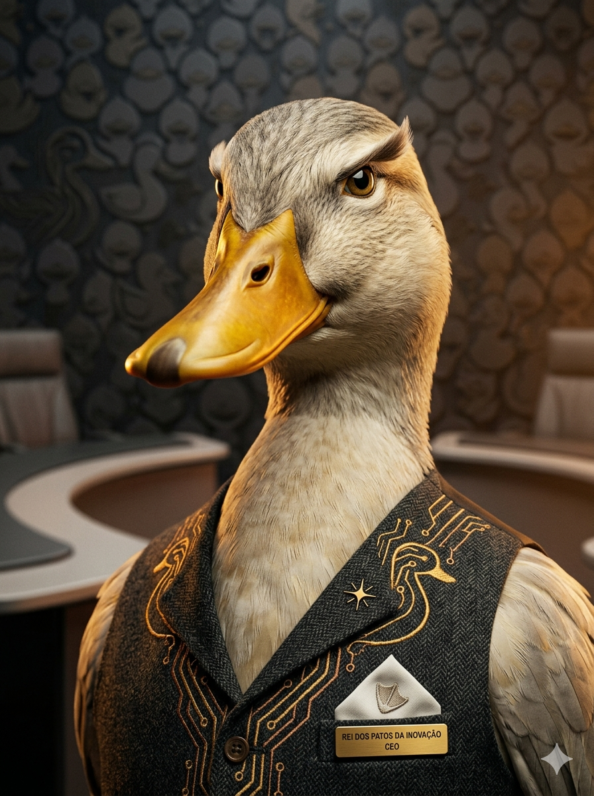

O Império do Pato
A Duck Tech nasceu do brilho incomparável do seu fundador, o magnífico Pato CEO. Ele mesmo diria: “Sem mim, a tecnologia não seria tão divertida e emplumada”. Com um ego do tamanho de um lago, ele decidiu criar a maior empresa de tecnologia comandada por um pato.
Aqui, cada ideia passa primeiro pelo bico do chefe, que (modéstia à parte) já se auto-intitulou “O Rei dos Patos da Inovação”. Nossos produtos são patenteamente geniais, e se você discordar, o Pato CEO vai olhar para você com aquela cara de “você não sabe nada sobre patos”.
Somos excêntricos, egocêntricos e absolutamente fodásticos. Duck Tech: porque o mundo precisa de mais patos no comando.
